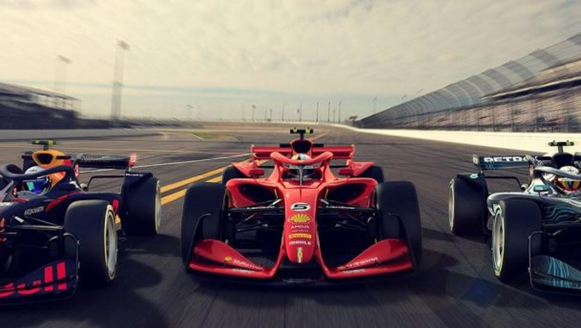
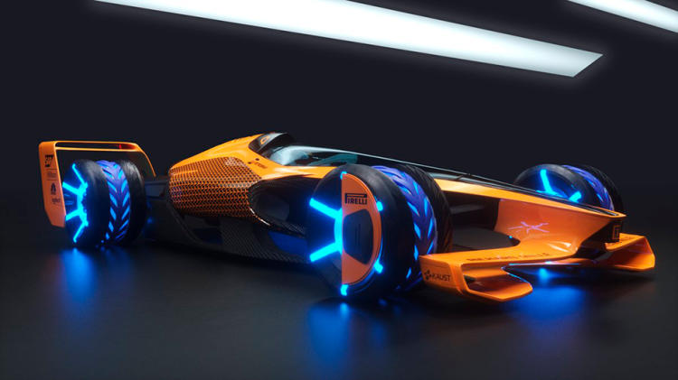

Asi, McLaren espera que en la Formula 1 de 2050 los monoplazas alcancen la velocidad de 500 km/h en rectas... Y de hecho nos muestra algunas imagenes de como serian sus denominados MCLExtreme. Un monoplaza de corte futurista que nos recuerda mas a una nave espacial que a un Formula 1 actual.
Una de las grandes novedades es que el coche sera adaptable segun las circunstancias de carrera: los sidepods se contraeran para maximizar la velocidad y se expandiran para una mayor estabilidad en su paso por curva. Aunque en esto la inteligencia artificial tendra mucho que deci.
Segun McLaren, la IA sera casi como un copiloto que controlara diferentes aspectos del monoplaza, del circuito y de los rivales: los equipos se gastaran una fortuna en mejorarla y perfeccionarla.
Asi, los pilotos estaran conectados a la inteligencia artificial del coche a traves de un enlace simbiotico en el casco y sensores dentro del traje de carrera. La IA aprendera y prevera las preferencias del conductor y el estado de animo. Dara una estrategia en tiempo real y toda la informacion clave de la carrera a traves de una pantalla holografica. Mas que eso: comprendera el estado de animo del conducto.
Pero, ojo, que la IA no estara disponible todo el tiempo. Se abriran ventanas de tiempo para usarla, pero habra momentos en los que los pilotos no dispongan de ella y tendran que demostrar su talento natural en la Formula 1 de 2050. Un videojuego un tanto peligros
Como era de suponer, los monoplazas o sidepods seran 100% electricos pero con algunas diferencias con respecto a los coches electricos de la actualidad. Tendran un potente motor electrico unido a una bateria flexible que se pegaria a la carroceria.
Se recargaran mediante induccion y su bateria se llenara al completo en apenas unos segundos... Y un dato curioso: los monoplazas de Formula 1 de 2050 seran capaces de robar energia a sus rivales para adelantarlos.
Mientras, la cabina de los monoplazas sera transparente para poder ver las reacciones de los pilotos. Por si fuera poco, sus emociones se proyectaran mediante un juego de luces de colores sobre la carroceria y los neumaticos... Y los neumaticos se repararan solos!
Tambien habra grandes cambios en los circuitos, que tendran ahora grandes desniveles y peraltes, ademas de ser mas largos... McLaren propone incluso un Gran Premio por las calles de Milan. A 500 km/h no nos parece una buena idea, la verdad.
Y que pasa con los Lewis Hamilton del futuro? Esta todo pensado (o eso parece). Los pilotos de 2050 contaran con unos monos inteligentes que se adaptaran a las condiciones extremas de estas futuristicas carreras: pareceran mas unos pilotos de cazas de combate.
Por cierto, segun McLaren los supermonoplazas del futuro no seran voladores... Asi sera la Formula 1 de 2050.
